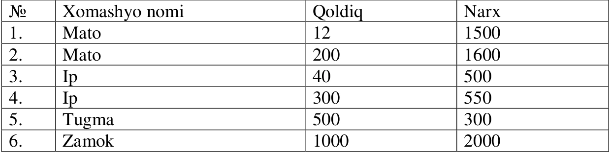

Omborxona tizimi – Mock Task
Ishlab chiqarish korxonasida mahsulot ishlab chiqarish uchun kerak bo‘lgan xomashyolarni hisoblash va ombor ma’lumotidan javob olish uchun REST API tuzish. Omborda qanchalik yetarli xomashyo borligini hisoblash. Qaysi partiyadan qancha xomashyo olinayotganini aniqlash. Yetmayotgan xomashyo miqdorini ko‘rsatish.
Ishlatiladigan texnologiyalar
Python
Django
Django Rest Framework (DRF)
SQLite3 (ma’lumotlar bazasi)
Postman (API test qilish)
Swagger yoki DRF Docs (API hujjatlari)
Ma’lumotlar bazasi (database) tuzilishi
Ma’lumotlarni olish uchun omborxona ma’lumotlar bazasiga so‘rov yuboriladi.
Mahsulot ishlab chiqarish uchun ishlatiladigan xomashyolar oldindan kiritilgan bo‘ladi.
Ma’lumotlar bazasi (database)da quyidagi jadvallar bo‘ladi (nomlari ingliz tilida):
1. Product (mahsulot) — ishlab chiqariladigan mahsulotlarproduct_nameproduct_code
2. Material (xomashyo) — mahsulot ishlab chiqarish uchun foydalaniladigan xomashyolarmaterial_name (str)
3. ProductMaterial (yordamchi jadval)product_id– mahsulot “id”simaterial_id– xomashyo “id”siquantity – foydalaniladigan xomashyolar soni
4. Warehouse (omborxona) — partiya bo‘lib kelgan xomashyolar jamlanmasimaterial_id– xomashyoremainder— ushbu partiyadan nechta xomashyo qolganini ko‘rsatadi.price— ushbu partiyada kelgan mahsulot qanday narxda kelganini ko‘rsatadi.
Masalan, 1 dona ko‘ylak ishlab chiqarish uchun:
0.8 m² mato
5 ta tugma
10 m ip
1 dona shim ishlab chiqarish uchun:
1.4 m² mato
10 m ip
1 ta zamok
Mahsulotlar va miqdorlar ro‘yxatini yuborish
Nusxa olishMisol so‘rov
[
{ ""product_code"": 238923, ""quantity"": 30 },
{ ""product_code"": 498723, ""quantity"": 20 }
]Asosiy API vazifasi
API quyidagilarni hisoblab qaytaradi
Har bir mahsulot uchun kerakli xomashyo miqdori.
Ombordagi partiyalar bo‘yicha qaysi qanchasidan olingani.
Partiya tugasa, qolgan miqdor yetmay qolsa,
warehouse_id: nullvaprice: nullbilan ko‘rsatadi.
Shunda omborxonadan olishim kerak bo‘lgan xomashyolar quyidagicha:
30 ta ko‘ylak uchun:
Mato – 24 m²
Tugma – 150 ta
Ip – 300 m
20 ta shim uchun:
Mato – 28 m²
Ip – 300 m
Zamok – 20 ta
Eslatma: Bu qiymatlar natijasi APIʼni tekshirish uchun berilgan.
Omborxonada bor xomashyolar partiyalar bo‘yicha: (tegishli rasmda ko‘rsatilgan — bu yerda misol sifatida berilgan).

Yuboriladigan so‘rov API orqali quyidagicha ko‘rinishda bo‘ladi:
Nusxa olish{
"product_code": 238923,
"quantity": 10
}E’tibor berish kerak bo‘lgan muhim qism
Ombor ma’lumotlari bazadan o‘zgarib ketmasligi kerak. Ya’ni hisoblash jarayonida remainder qiymatini ayirib qo‘ymang.
Hisoblashda oldingi mahsulotlardan olingan miqdorlarni hisobga olib, keyingi mahsulotlar uchun partiyalar qoldig‘idan foydalaning.
Omborxonaga yuborilgan so‘rov javobi quyidagicha bo‘lishi kerak:
Nusxa olish{
"result": [
{
"product_name": "Koylak",
"product_qty": 30,
"product_materials": [
{
"warehouse_id": 1,
"material_name": "Mato",
"qty": 12,
"price": 1500
},
{
"warehouse_id": 2,
"material_name": "Mato",
"qty": 12,
"price": 1600
},
{
"warehouse_id": 5,
"material_name": "Tugma",
"qty": 150,
"price": 300
},
{
"warehouse_id": 3,
"material_name": "Ip",
"qty": 40,
"price": 500
},
{
"warehouse_id": 4,
"material_name": "Ip",
"qty": 260,
"price": 550
}
]
},
{
"product_name": "Shim",
"product_qty": 20,
"product_materials": [
{
"warehouse_id": 2,
"material_name": "Mato",
"qty": 28,
"price": 1600
},
{
"warehouse_id": 4,
"material_name": "Ip",
"qty": 40,
"price": 550
},
{
"warehouse_id": null,
"material_name": "Ip",
"qty": 260,
"price": null
},
{
"warehouse_id": 6,
"material_name": "Zamok",
"qty": 20,
"price": 2000
}
]
}
]
}Agar bir xil xomashyodan bir nechta mahsulot so‘ragan bo‘lsa, avvalgi mahsulotlar olgan partiya va sonlarni (ya’ni band qilganlarini) tashlab ketib hisoblash kerak. Lekin bu yerda bazadagi ma’lumotga hech qanday o‘zgartirish kiritish kerak emas (ya’ni olingan sonni “remainder” dan ayirib qo‘yish kerak emas).
Masalan, ikkinchi mahsulot (shim) uchun “mato” xomashyosi birinchi partiyadan emas, ikkinchi partiyadan olinmoqda. Chunki birinchisining hammasi ko‘ylak uchun ketgan. “Ip” xomashyosi esa 4-partiyadan qolganidan 40 ta olinmoqda, qolgan 260 tasi yo‘qligi sababli "warehouse_id": null, price: null tarzida qaytmoqda. Bu ma’lumotlarni olayotganda “warehouses” jadvaliga hech qanday o‘zgartirish kiritilmaydi.
Natijani topshirish
Database to‘ldirilib, testlashga tayyor holatga keltirilgan bo‘lishi kerak.
.zip fayl qilib yuklang yoki GitHub repository yaratib, havolasini yuboring.
murakkab
2
3 soat
havola
Vazifani bajarish
© Mohirdev 2026. Barcha huquqlar himoyalangan.